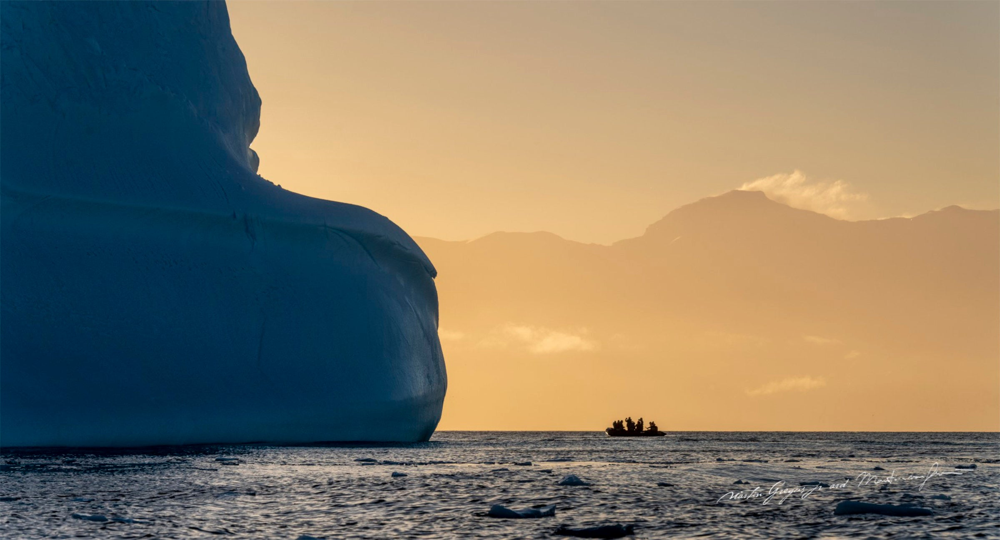
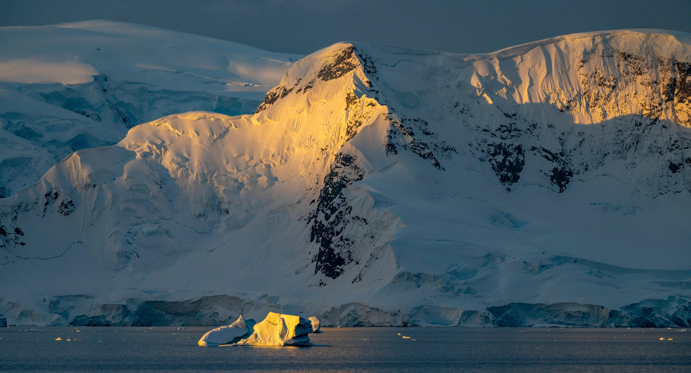
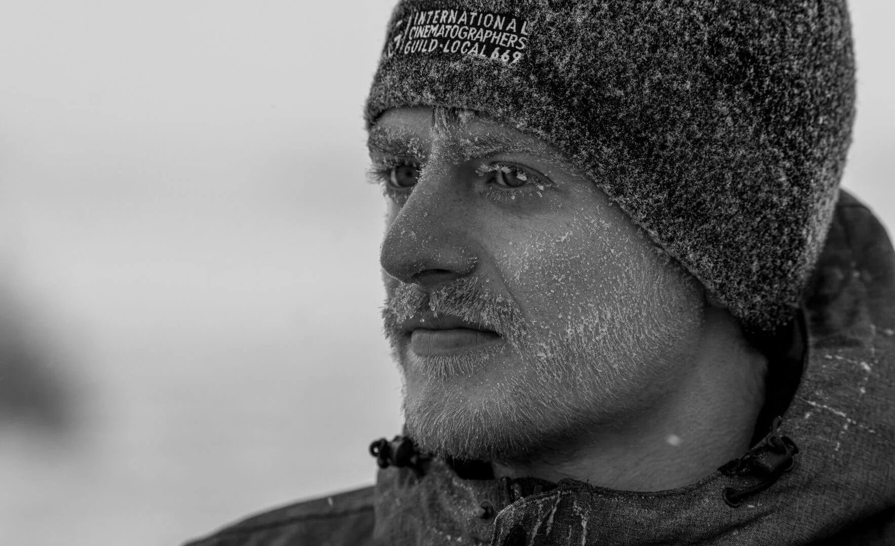
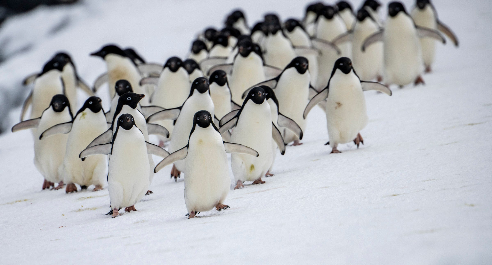
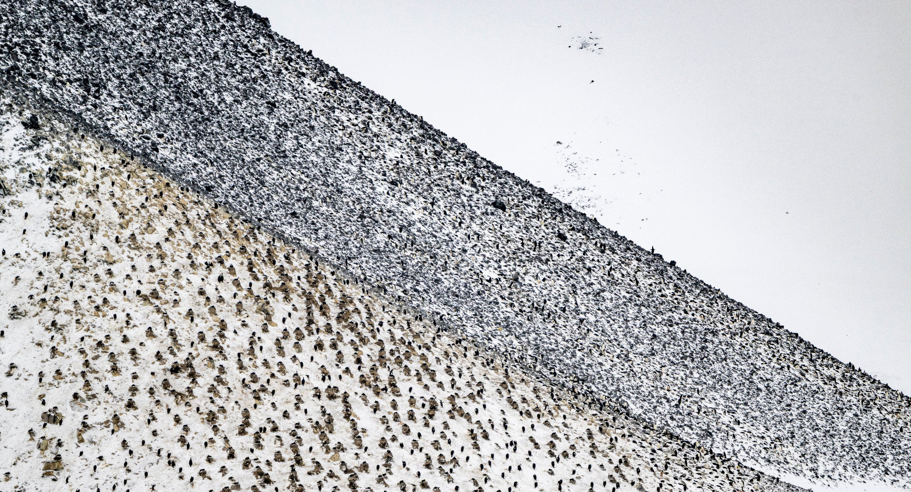
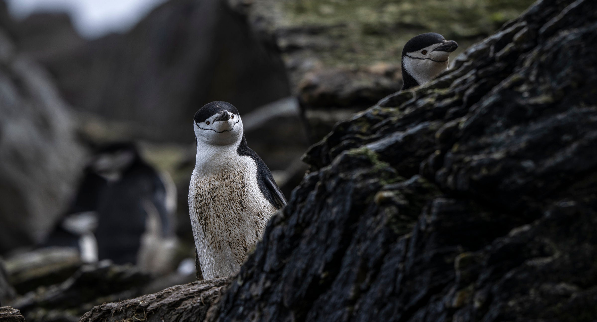
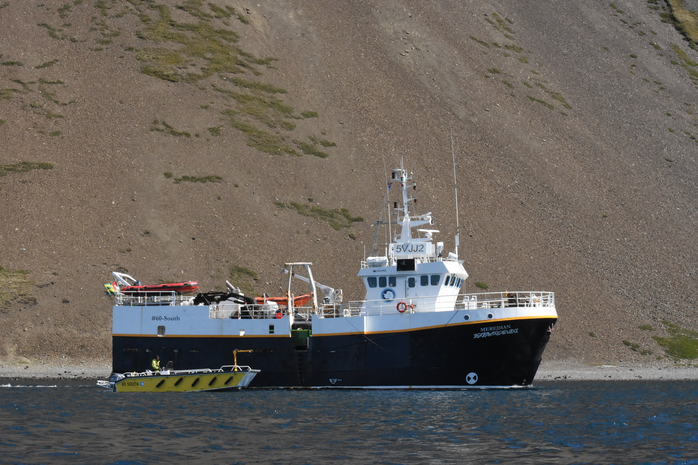
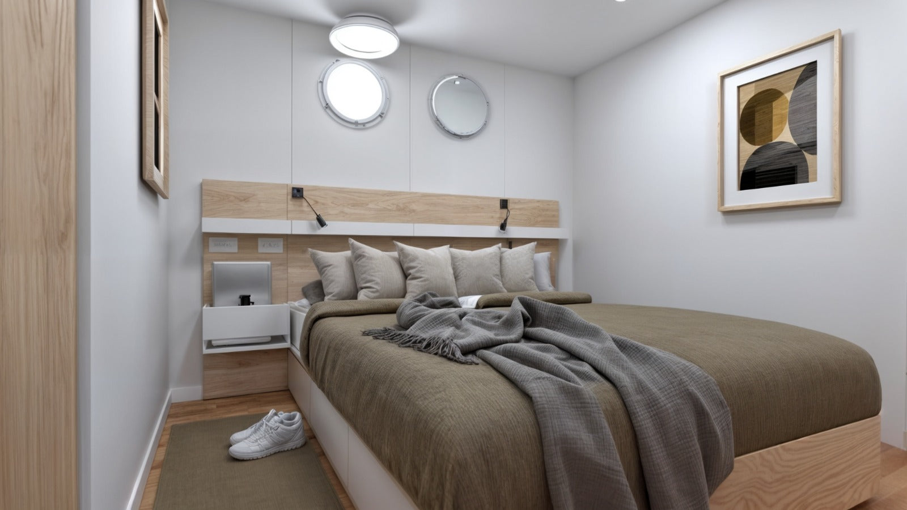

Private Small-Vessel Expedition
Antarctica: Wildlife of the White Continent
Twenty-seven nights aboard Meridian with wildlife photographer Martin Gregus, a flexible route and only 12 guests.

Twenty-seven nights aboard Meridian with wildlife photographer Martin Gregus, a flexible route and only 12 guests.
A long-format expedition with enough time to move beyond a quick Antarctic overview.
The entire vessel is chartered for a small group, keeping the experience personal and flexible.
Active penguin colonies, seals, returning whales and dramatic ice at the opening of the season.
Zodiac excursions, shore landings and wildlife scouting whenever conditions allow.
The captain and expedition team can respond to weather, wildlife, sea ice and the best available light.
Photography workshops, field guidance, presentations, image reviews and storytelling sessions.
Antarctica is not a place you can force into a schedule. The ice moves, the weather decides, and the wildlife reveals itself only when the moment is right.
This 27-night expedition aboard Meridian is built around that truth. With the entire vessel chartered for just 12 guests, the route can flex around weather, light and wildlife.
Early December marks the beginning of the Antarctic summer. Penguin colonies are alive with activity, seals move through the ice, whales begin returning to feeding grounds, and the landscape still carries the raw feeling of the season opening.
Martin brings the patience of a wildlife photographer to every day in the field. This is about learning to read the ice, understand animal behaviour, wait for the right light and experience Antarctica with the time it deserves.

"To be in the presence of a unique visionary like Martin Gregus and be welcomed into his home away from home in the middle of nowhere is truly a once in a lifetime event right up there with getting married or having a child."Anne Prather · United States

Martin Gregus grew up in Bratislava, Slovakia, in a household full of artists. He learned photography from his father and was exploring local wildlife with a camera before most kids had decided what they wanted to do with their lives.
His work has taken him across all seven continents and some of the most remote ecosystems on the planet. He has earned two wins and two nominations at Wildlife Photographer of the Year, and his polar bear project, 33 Days Among the Bears, became an international story after National Geographic coverage.
His cinematography has contributed to productions for Disney, BBC and Netflix. In the field, Martin teaches patience, preparation and how to read wildlife, weather and light.

The value of this expedition is time. Twenty-seven nights create room to stay longer when conditions are extraordinary, move toward quieter coastline and let wildlife behaviour shape the day.
With only 12 guests, Martin can work closely with photographers and wildlife lovers alike. The group can learn from each sighting instead of racing through a fixed checklist.
This is still true expedition travel. Landings, routes and wildlife encounters depend on weather, ice, safety and permissions. That uncertainty is part of what makes Antarctica real.



Board at the confirmed departure port, settle into your cabin and meet Martin, your additional guide and the expedition team. After safety briefings and dinner onboard, the voyage begins.
Settle into life at sea with wildlife scouting, photography briefings, seabirds from the deck and preparation for Antarctic conditions.
Conditions allowing, begin Zodiac cruising and shore landings among penguin colonies, glacier fronts, sculpted ice and the early signs of summer.
Follow the best windows for wildlife, light and ice. Days may bring Zodiac cruises, shore landings, penguins, seals, whale scouting and field guidance with Martin.
Stay longer when conditions are exceptional or move toward quieter bays. Expect patient observation, image reviews and the unpredictability that makes Antarctica powerful.
Head north across the Southern Ocean with editing sessions, presentations, final image reviews and time to reflect on nearly four weeks in Antarctic waters.
Arrive at the confirmed port and disembark after breakfast. Final joining details will be supplied before guests book travel.

Meridian is the base for wildlife scouting, daily briefings, shared meals, workshops and the crossings that connect each landing opportunity.
The full vessel is chartered for a maximum of 12 guests. This gives the expedition team room to adapt the route and creates more direct time with Martin.
The final embarkation and disembarkation port is still to be confirmed. Exact joining details will be supplied before guests book travel.
Final routes, landings and wildlife encounters depend on weather, sea, ice, safety and local permissions.
Per person in USD for the confirmed departure.
Per person in USD to reserve your place.
Trip price, deposit, availability, payment schedule and final inclusions should be confirmed with Airguides at the time of booking.
Get in touch to check availability, confirm final joining details and secure your place with a deposit.
Secure Your Spot